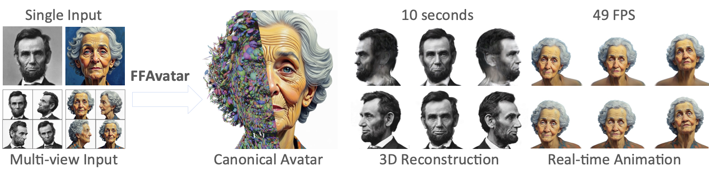
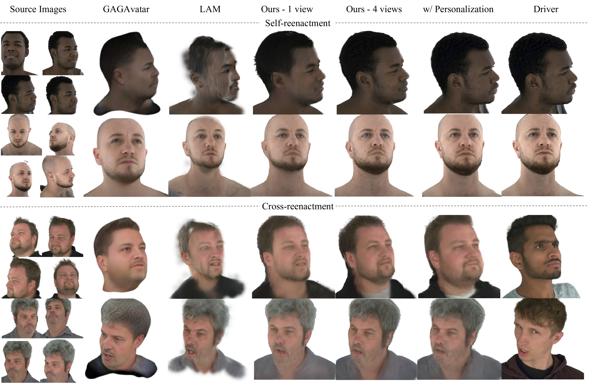
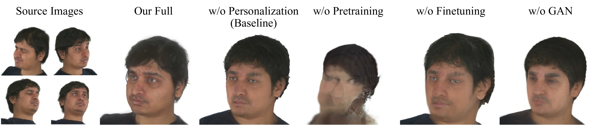
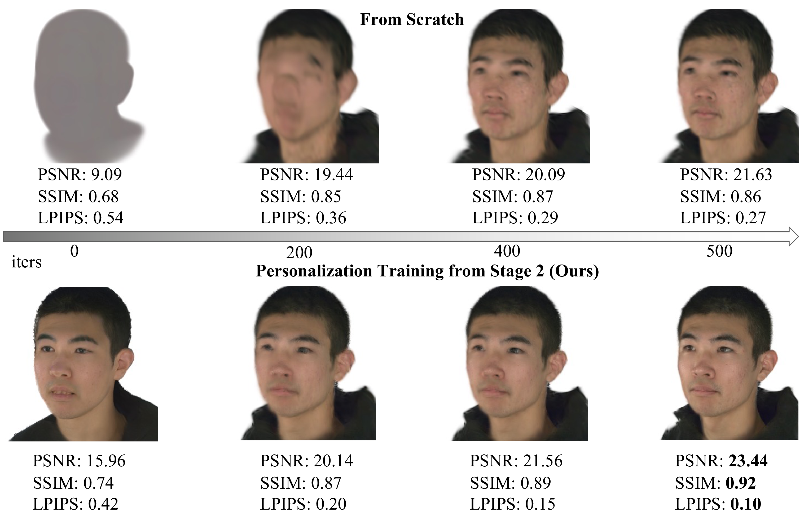
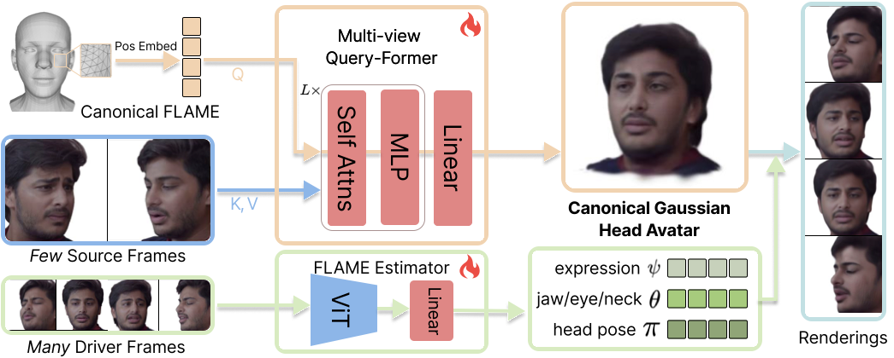
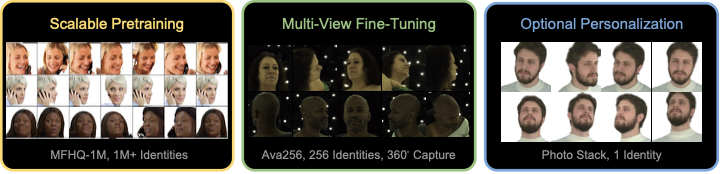

Avatar reconstruction has traditionally relied on per‑subject optimization requiring hours of computation or expensive preprocessing that severely limits its scalability. We introduce FFAvatar, a generalizable feedforward framework that reconstructs high-quality, animatable 3D Gaussian head avatars from few-shot unposed portrait images in seconds. FFAvatar fuses information from multiple source images into a unified canonical Gaussian representation through our Multi-View Query-Former network, which is then animated via FLAME parameters predicted end‑to‑end directly from pixels, eliminating the overhead of offline FLAME extraction. We further propose a three-stage training curriculum that achieves both broad generalization and high-fidelity reconstruction: (i) scalable pretraining on extensive monocular video data with over 1M identities to learn strong generalizable priors; (ii) multi-view fine‑tuning on a small but high-quality dataset of 360 degree captures to enhance geometric fidelity and extreme view awareness; and (iii) optional personalization that adapts to specific identities for maximum fidelity within 500 optimization steps. Extensive experiments demonstrate that FFAvatar sets a new standard for identity preservation, geometric consistency, and animation fidelity. On the NeRSemble benchmark, it outperforms the state-of-the-art LAM by a substantial 5.5 PSNR gain. Furthermore, FFAvatar enables real-time deployment, achieving 2 seconds and 10 seconds reconstruction without and with personalization, respectively, and 49 FPS animation on a single NVIDIA A100 GPU.

FFAvatar generates 3D Gaussian head avatars from few-shot images in a feedforward manner within seconds in one A100 GPU. With more input views, both geometry and texture details improve significantly. FFAvatar can also be directly animated using driving frames without precomputed FLAME parameters, enabling 49 FPS reenactment.

Qualitative comparison with baseline methods. FFAvatar reconstructs high-fidelity 3D head avatars from few-shot unposed images, achieving superior geometric accuracy and texture quality compared to state-of-the-art approaches. Our multi-view framework captures fine details such as facial features, hair structure, and subtle expressions that single-view methods fail to preserve.

Ablation study of key components. We systematically evaluate the impact of our three-stage training curriculum, end-to-end FLAME estimation, and multi-view architecture. Results demonstrate that each component contributes significantly to the final quality, with the full model achieving the best balance between generalization and reconstruction fidelity.

Personalization convergence over training steps. Our optional personalization stage rapidly adapts the pretrained model to specific identities. The figure shows progressive improvement in identity preservation and geometric detail over just a few hundred training steps (less than 7 seconds on a single A100 GPU), demonstrating the efficiency of our approach compared to optimization-based methods that require training from scratch.
Quantitative comparison of our method against baselines.
Quantitative comparison of our method against baselines.
Recent progress in neural 3D avatar reconstruction has produced high-quality digital humans, yet these methods remain bottlenecked by the necessity of per-subject optimization requiring hours of computation and dozens to hundreds of images per identity. This fundamental limitation restricts their utility in practical applications where rapid deployment and minimal subject-specific data are paramount, such as virtual presence and telepresence.
The recent Large Avatar Model (LAM) marks a significant advance by eliminating per-subject optimization: it predicts animatable 3D Gaussian avatars in a single feed-forward pass, achieving unprecedented inference speed across identities. However, LAM has two critical limitations. First, it operates on single-view inputs, which constrains identity preservation and geometric fidelity, particularly for unseen or extreme viewpoints where regions are occluded or poorly observed in the input. This missing information therefore requires being hallucinated by the model, leading to reduced fidelity. Second, LAM depends on expensive precomputed FLAME parameter extraction, which fundamentally limits its scalability to large unconstrained datasets training and thus degrades the generalization of the final model.
We introduce FFAvatar, a few-shot generalizable feedforward avatar reconstruction framework that reconstructs high-quality, animatable 3D Gaussian head avatars in seconds from 1-N input images of an identity. Our work makes two key contributions:
1. Multi-View Avatar framework with End-to-end FLAME estimation: Previous state-of-the-art methods rely on camera calibration or external FLAME parameter estimation, which requires expensive preprocessing pipelines. Applying such preprocessing at the scale needed for training would be prohibitively costly under computational budgets. This expensive preprocessing fundamentally limits the ability to scale to large, unconstrained datasets.

FFAvatar pipeline. FFAvatar encodes few-shot input views and decodes to a canonical Gaussian head avatar via a Multi-view Query-Former, where canonical FLAME vertices are used as queries and source frame features are used as keys and values. A FLAME estimator is trained end-to-end to predict per-view expression 𝜓 and pose parameters 𝜃, 𝜋 from driver frames for animation, which removes the need for expensive FLAME preprocessing and thus enables scalable training. Finally, a few-to-many training strategy enhances generalization to unseen expressions and poses by supervising more targets (Driver Frames) from fewer input views (Source Frames).
Our framework addresses this limitation through two innovations. First, we learn a FLAME Estimator end-to-end—we predict per-view expressions and poses directly from raw pixels through photometric supervision, eliminating external preprocessing and enabling truly scalable, robust avatar reconstruction, as well as streamable avatar animation. Second, our multi-view architecture and few-to-many training objective enables FFAvatar to reconstruct a single, unified canonical Gaussian representation from multiple unposed input images. Unlike prior single-view methods, our architecture processes all input views jointly: image features from multiple viewpoints are aggregated into 3D queries from FLAME canonical vertices, producing a consistent set of canonical Gaussian splatts. By fusing information across multiple viewpoints, our approach achieves superior identity preservation and geometric consistency. FFAvatar is trained with a few-to-many objective: at each step, the model consumes a small conditioning subset of views to reconstruct the canonical avatar, then renders a larger set of target views with different expressions and poses. This training strategy teaches the model to generalize to unseen expressions and viewpoints of the same identity, ensuring robust performance even when only few images are available at inference.
2. Three-stage training curriculum: Achieving generalization across identities while maintaining high-fidelity reconstruction is nontrivial due to a fundamental dataset dilemma. One could train directly on high-quality 360-degree captured datasets, but these are severely limited in diversity. One of the largest available dataset is Ava256, which contains only 256 identities, causing models to overfit and fail to generalize to unseen identities at inference. Conversely, large-scale in-the-wild video datasets offer abundant multiple frames across identities but lack true multi-view coverage and 360-degree geometric supervision.

Three-Stage Training of FFAvatar. Scalable pretraining fosters generalization across unseen identities by training on our collected large-scale multi-faces-per-identity dataset MFHQ-1M, multi-view fine-tuning enhances geometric fidelity by optimizing the pretrained weights on a small-scale 360 degrees multi-view captures (e.g. AVA256), and lightweight personalization efficiently improves identity preservation by a few hundred steps tuning for a target identity in <7 seconds on a single A100 GPU.
We address this with a progressive three-stage training strategy. As illustrated in the figure above, we begin with scalable pretraining on diverse videos containing numerous identities, where multiple frames of the same person provide varied expressions and viewpoints. Although not truly 360-aware, this stage establishes strong generalization across identities. We then perform multi-view fine-tuning on small but high-quality multi-view datasets to inject geometric fidelity and 360-degree awareness; because the model is already pretrained, we find even a modest dataset like Ava256 suffices to impart multi-view consistency. Finally, we support optional personalization, where our model can rapidly adapt to specific identities in less than 500 steps and 7 seconds on a single A100 GPU, dramatically faster than optimization-based methods that must train from scratch.